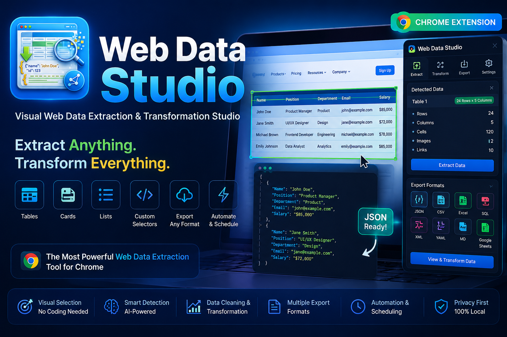

Web Data Studio turns tables, cards, lists and grids on any page into clean, structured data — picked visually, previewed live, and exported in the format you need. All local, no server, no tracking.

<features>
Six modules that take you from a messy page to a clean dataset. Hover a card — it behaves like the picker itself.
<detect />
Finds native tables, semantic lists, and repeated card/grid patterns automatically — and fingerprints libraries like AG Grid, Tabulator, Handsontable, Kendo Grid, DataTables, Bootstrap Table, PrimeVue, Vuetify, Element Plus, Ant Design and MUI.
<picker />
A DevTools-style inspector overlay. Hover to highlight, click to select — right from the popup, the side panel, or Ctrl+Shift+P.
<preview />
An editable preview table — click any cell to edit, drop rows or columns inline. One-click trim, de-duplicate, and case conversion (UPPER / lower / Title).
<resources />
Finds every image, video and audio file on the page. Select what you need and zip it for download — entirely in the browser, no upload required.
<export />
JSON, JSON Lines, CSV, TSV, Markdown, HTML, XML, YAML, or SQL INSERT
statements — with a live preview pane and one-click copy or download.
<history />
Every extraction is saved locally, so you can revisit or re-export a past session without re-scanning the page.
<demo>
<walkthrough>
A complete tour — detection, picking, cleaning, transforming, exporting, and everything in between.
<screenshots>
Click any frame to zoom in.
<install>
Stable builds ship as a ready-to-use dist.zip
on the Releases page.
1 download dist.zip
2 unzip dist.zip
3 open chrome://extensions
4 enable "Developer mode"
5 click "Load unpacked" → select the unzipped folder
Then pin the extension and press Ctrl+Shift+D to open it.
<roadmap>
<faq>
Web Data Studio is a free, open-source Chrome extension that visually detects and extracts tables, lists, cards, and grids from any webpage, then lets you clean, transform, and export the data locally — with no server and no tracking.
Web Data Studio exports to JSON, JSON Lines, CSV, TSV, Markdown, HTML, XML, YAML, and SQL
INSERT statements, with a live preview and one-click copy
or download.
Yes. Web Data Studio is free and open source under the MIT License, distributed as a ready-to-use dist.zip on its GitHub Releases page.
No. All detection, extraction, cleaning, and export happen locally inside your browser. Web Data Studio does not use a server and does not track usage.